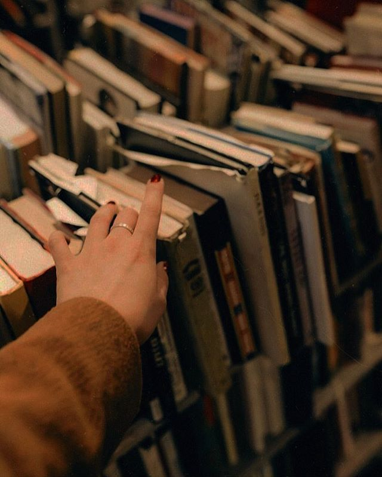

We Read to know we are not alone.
I love reading books.I could live a life somewhere as a recluse and read all day and tend to my farm animals,I would.My favourite authors are Jane Austen,JK Rowlings,Suzanne Collins,F.Scott Fizgerald and Charlotte Brontë. I would not trade reading for any other hobby in the world. I fell in love with books and words at a very young age and I have not fell out of love with it since.
I love classics and Korean literature the most.I also occsionally read poetry and contemporary fiction that inspires great emotion.I also love buying books. I currently have over 40 books in my personal library.I am currently reading Persuauion by Jane Austen.I would like to recommend the great Gatsby.It is a wonderful read and one of my favorite books.It was written by the aforementioned F.scott Fitzgerald.It is about a man called Gatsby. No surprise there.A friend of mine thought Gatsby to be eccentric.He threw parties in his large mansion so that he can draw his one true love to the himself.Unortunately,the woman he loved was already married to another man by the time that he was coming back from war.When he finally got her back,he was shot dead due to a mix up and in respect with the fault of the aforementioned woman he loved
.